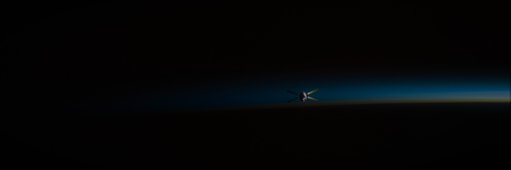
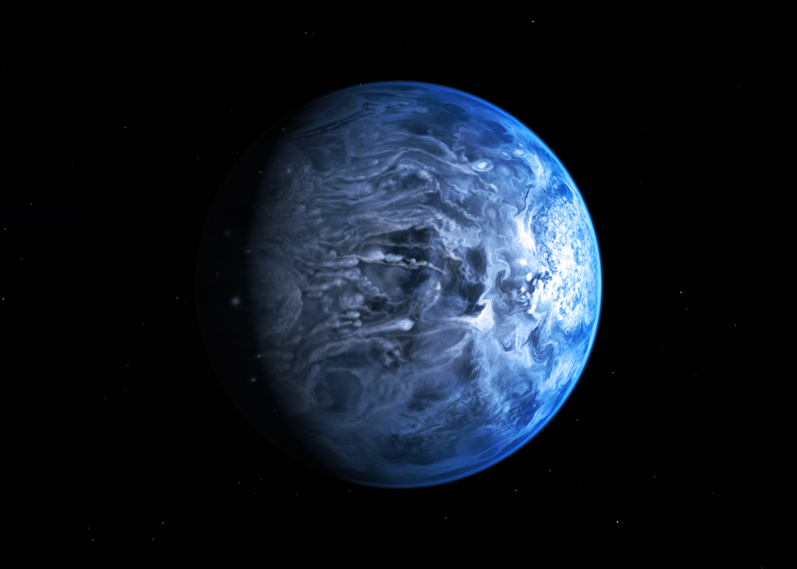
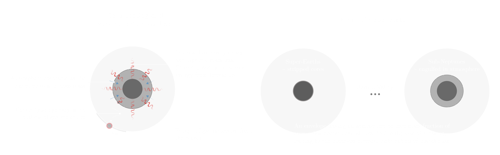

In 2016, I graduated from the Indian Institute of Technology (IIT), Kanpur
with a Bachelor's and Master's (Dual degree) in Aerospace Engineering. For my Master's thesis, I worked on the dynamics of rings around non-spherical bodies under the supervision of
Dr. Ishan Sharma and Dr. Sharvari Nadkarni-Ghosh.
Furthermore, I even worked on projects encompassing planetary rings, orbital dynamics, N-body simulations, kinetic/granular theory and building Formula prototype cars.
Research

My general research interests revolve around the formation, evolution, interiors and dynamics of planetary bodies (extra-solar and solar).
My present and past research projects can be classified into the following broad categories:
Formation and evolution of small exoplanets
Dynamics, impacts and craters
Planetary ring dynamics
Origin of super-Earths and sub-Neptunes

Blue and Bizarre. Artist's impression of the exoplanet HD 189733b. Image credit: NASA, ESA, M. Kornmesser.
Until 1995, we only knew about the eight planets of our Solar system. However, we have since discovered thousands of planets in our galactic neighborhood orbiting other stars, i.e., exoplanets
(4031 as of Aug 1 2019; see NASA Exoplanet Archive). These discoveries have revolutionized the field
of exoplanetary science and offer new insights into the formation and evolution of planets.
Radius valley in the distribution of small, close-in planets separating populations of super-Earths and sub-Neptunes.
Plot based on data from Fulton et al. 2017.
One of the key findings has been that the most abundant planets in our galaxy, to date, are 1 to 4 Earth radii in size.
Interestingly, recent observations have revealed a radius valley, i.e., a lack of planets of 1.5 - 2.0 Earth radii, in
the size distribution of such small (1 to 4 Earth radii), short-period (<100 days) exoplanets. Furthermore, a transition in planet density has been noted around
~1.6 Earth radii, with smaller planets having higher bulk densities, consistent with rocky Earth-like compositions while
larger planets having a lower bulk densities, suggesting that these planets are engulfed in H/He atmospheres.
Therefore, it has been suggested that the valley likely marks a transition regime from smaller rock
'super-Earths' to larger planets with significant atmospheres, 'sub-Neptunes'.

Schematic demonstrating how the core-powered mass-loss mechanism results in the radius valley, and super-Earths and sub-Neptunes. See Gupta & Schlichting, 2019a for details.
Typically, planetary atmospheric erosion due to high-energy radiation from the host stars, i.e., photoevaporation, is suggested as an explanation to these observations.
However, recently Ginzburg et al. 2018 and we (Gupta & Schlichting, 2019a) demonstrated that atmospheric loss due to a planet's own cooling luminosity, i.e., core-powered mass-loss,
can also lead to the observed radius valley, even without photoevaporation.
Furthermore, we find that planetary evolution under this mechanism can explain a multitude of trends observed in the planet size distribution
with orbital period and stellar mass, metallicity, age and insolation flux (Gupta & Schlichting, 2019b).
It is likely that both core-powered mass-loss and photoevaporation, along with other mechanisms, have been active in sculpting the planet distribution observed today, nevertheless,
our work shows that the valley in the size distribution of exoplanets is an inevitable by-product of the planetary formation process, i.e., through the core-powered mass-loss mechanism.
To know more, please refer:
⚬ A. Gupta & H.E. Schlichting, 2019b. In review. arXiv:1907.03732. [ADS] [arXiv]
⚬ A. Gupta & H.E. Schlichting, 2019a. MNRAS 487, 24-33. [ADS] [arXiv]
Dynamics, Impacts & Craters: Asymmetry in the distribution of Lunar Cold-spots
Rings around small, non-spherical planetary bodies
Artistic rendition of the triaxial shaped dwarf planet Haumea with its surrounding ring.
Image credit: Wikipedia user 'Tomruen'.
For years, we have known of the rings around the giant planets of our Solar System.
Rings are also expected to exist around extrasolar planets but have not been detected so far.
However, what was not expected was the existence of rings around much smaller, non-spherical bodies of our Solar System.
This changed in 2014 with the discovery of rings around a small body named Chariklo, followed by another discovery in 2017, of rings around the dwarf planet, Haumea.
These discoveries suggest that the ring systems are much more common in our Solar System than previously thought,
and their existence has challenged our understanding of their evolution and formation.
In collaboration with my former group
from IIT Kanpur (Dr. Ishan Sharma, Dr. Sharvari Nadkarni-Ghosh, Shri B. Bharath and others), I have been trying to understand the dynamics
of rings around non-spherical bodies through N-body simulations and by developing a kinetic theory prescription (led by Shri B. Bharath).
To know more, please refer:
⚬ A. Gupta, S. Nadkarni-Ghosh & I. Sharma, 2018. Icarus 299, 97-116. [ADS][arXiv]
Saturn's F-ring: dynamics under continual aggregate formation and disruption
Cassini image shows Saturn's potato-shaped moon, Prometheus, dynamically and physically interacting with the F-ring.
Image credit: NASA/JPL/Space Science Institute.
⚬ Adaptively optimized trajectories for rendezvous with an asteroid
⚬ Orbital dynamics around an irregular body
⚬ Formula SAE, Italy'13 by SAE International (IITK Motorsports)
If you have any questions, comments or suggestions regarding my work and publications or would like to collaborate, please do get in touch. I’d love to hear from you!
Room 4642, Geology Building
Department of Earth, Planetary, and Space Sciences
University of California, Los Angeles
595 Charles Young Drive East,
Los Angeles, CA 90095-1567, USA.